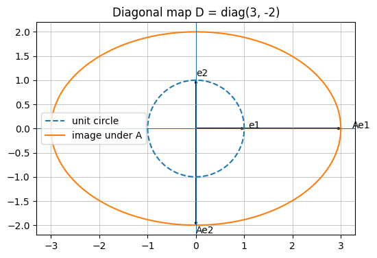

\[
D
\begin{bmatrix}
x \\ y
\end{bmatrix}=\begin{bmatrix}
3x \\ -2y
\end{bmatrix}.
\]
So \(D\) stretches the \(x\)-coordinate by \(3\), stretches the \(y\)-coordinate by \(2\), and reflects across the \(x\)-axis because the second diagonal entry is negative.
So \(e_1\) is an eigenvector with eigenvalue \(3\), and \(e_2\) is an eigenvector with eigenvalue \(-2\).
Show code
import numpy as npimport matplotlib.pyplot as pltnp.set_printoptions(precision=5, suppress=True)def print_matrix(name, A):print(f"{name} =")print(np.array(A))print()def unit_circle(n=400): t = np.linspace(0, 2*np.pi, n)return np.vstack([np.cos(t), np.sin(t)])def plot_linear_map_2d(A, title=None, show_svd_dirs=True):# Plot the unit circle and its image under a 2 x 2 matrix A. A = np.asarray(A, dtype=float) C = unit_circle() AC = A @ C fig, ax = plt.subplots(figsize=(6, 6)) ax.plot(C[0], C[1], linestyle="--", label="unit circle") ax.plot(AC[0], AC[1], label="image under A")# Standard basis and images e1 = np.array([1.0, 0.0]) e2 = np.array([0.0, 1.0])for e, label in [(e1, "e1"), (e2, "e2")]: ax.arrow(0, 0, e[0], e[1], head_width=0.04, length_includes_head=True) Ae = A @ e ax.arrow(0, 0, Ae[0], Ae[1], head_width=0.04, length_includes_head=True) ax.text(e[0]*1.08, e[1]*1.08, label) ax.text(Ae[0]*1.08, Ae[1]*1.08, "A"+ label)if show_svd_dirs: U, s, Vt = np.linalg.svd(A) V = Vt.T# Right singular directions on the input circle and their images.for i inrange(2): v = V[:, i] u_scaled = s[i] * U[:, i] ax.arrow(0, 0, v[0], v[1], head_width=0.03, length_includes_head=True) ax.arrow(0, 0, u_scaled[0], u_scaled[1], head_width=0.03, length_includes_head=True) ax.text(v[0]*1.15, v[1]*1.15, f"v{i+1}") ax.text(u_scaled[0]*1.08, u_scaled[1]*1.08, f"σ{i+1}u{i+1}") ax.axhline(0, linewidth=0.8) ax.axvline(0, linewidth=0.8) ax.set_aspect("equal", adjustable="box") ax.grid(True, linewidth=0.5) ax.legend(loc="best")if title: ax.set_title(title) plt.show()
Show code
D = np.array([[3, 0], [0, -2]])print_matrix("D", D)print("det(D) =", np.linalg.det(D))print("D inverse:")print(np.linalg.inv(D))print()plot_linear_map_2d(D, title="Diagonal map D = diag(3, -2)", show_svd_dirs=False)
D =
[[ 3 0]
[ 0 -2]]
det(D) = -6.0
D inverse:
[[ 0.33333 0. ]
[-0. -0.5 ]]

19.2 Orthogonal matrices
A real square matrix \(Q \in \mathbb{R}^{n \times n}\) is orthogonal if
\[
Q^\top Q = I.
\]
Equivalently,
\[
Q^{-1} = Q^\top .
\]
This condition says that the columns of \(Q\) form an orthonormal basis of \(\mathbb{R}^n\).
Since angles can be recovered from dot products using
\[
x^\top y = \|x\|\|y\|\cos\theta,
\]
orthogonal matrices preserve angles as well. Geometrically, real orthogonal matrices represent rotations, reflections, or compositions of rotations and reflections.
Eigenvalue decomposition tries to understand a matrix by decomposing it in terms of orthogonal and diagonal operations (matrices).
20.1 Eigenvalues and eigenvectors
Let \(A \in \mathbb{R}^{n \times n}\). A nonzero vector \(v\) is an eigenvector of \(A\) with eigenvalue \(\lambda\) if
\[
Av = \lambda v.
\]
This means that applying \(A\) to \(v\) keeps the vector on the same line. The vector may be stretched, shrunk, reflected, or sent to zero, but it does not change direction except possibly by a sign.
20.2 Diagonalization
Suppose \(A\) has \(n\) linearly independent eigenvectors \(v_1,\dots,v_n\), with corresponding eigenvalues \(\lambda_1,\dots,\lambda_n\).
\[
D =\operatorname{diag}(\lambda_1,\dots,\lambda_n).
\]
Then
\[
AP = PD.
\]
Multiplying on the right by \(P^{-1}\), we get
\[
A = PDP^{-1}.
\]
This is the eigenvalue decomposition, or diagonalization, of \(A\).
The interpretation is:
\(P^{-1}\): change coordinates into the eigenvector basis.
\(D\): scale each eigenvector direction by its eigenvalue.
\(P\): change back to the original coordinates.
20.3 Symmetric matrices and orthogonal diagonalization
The cleanest version of eigenvalue decomposition occurs for real symmetric matrices:
\[
A = A^\top,
\]
In particular, one may show that all of the eigen-values are real (not complex) and the associated eigen-vectors are orthonormal. Consequently, \(A\) can be written as
\[
A = Q \Lambda Q^\top,
\]
where
\(Q\) is orthogonal,
\(\Lambda\) is real and diagonal,
the columns of \(Q\) form an orthonormal eigenbasis for \(A\),
the diagonal entries of \(\Lambda\) are the eigenvalues of \(A\).
The eigenvalue decomposition is powerful, but it has several limitations.
First, it applies directly only to square matrices. A rectangular matrix \(A \in \mathbb{R}^{m \times n}\) does not define a map from a vector space to itself, so the equation
\[
Av = \lambda v
\]
usually does not even make sense dimensionally.
Second, not every square matrix has enough linearly independent eigenvectors to be diagonalized. For example,
Third, eigenvalues may be negative or complex, even for real matrices. This can make the geometric interpretation less clean.
SVD avoids these issues. It works for every matrix, including rectangular matrices, and its “singular values” (which replace eigenvalues) are always real and nonnegative.
Show code
A_defective = np.array([[1, 1], [0, 1]])evals, evecs = np.linalg.eig(A_defective)print_matrix("Defective matrix A", A_defective)print("Eigenvalues:", evals)print("Eigenvectors returned by NumPy:")print(evecs)print()print("This matrix has repeated eigenvalue 1 but only one eigendirection.")
Defective matrix A =
[[1 1]
[0 1]]
Eigenvalues: [1. 1.]
Eigenvectors returned by NumPy:
[[ 1. -1.]
[ 0. 0.]]
This matrix has repeated eigenvalue 1 but only one eigendirection.
21 The Singular Value Decomposition
We now move to SVD.
Let
\[
A \in \mathbb{R}^{m \times n}.
\]
The singular value decomposition of \(A\) is
\[
A = U\Sigma V^\top ,
\]
where
\[
U \in \mathbb{R}^{m \times m},
\qquad
\Sigma \in \mathbb{R}^{m \times n},
\qquad
V \in \mathbb{R}^{n \times n}.
\]
Because \(A\) is symmetric and positive definite, we can take
\[
U = Q,
\qquad
V = Q.
\]
So the SVD is
Note the signs of singular vectors are not unique. For example, replacing a column of \(U\) and the corresponding column of \(V\) by their negatives gives the same SVD.
25 General SVD
The SVD can be derived using eigenvalue decomposition of symmetric matrices.
Suppose
\[
A = U\Sigma V^\top .
\]
Then
\[
A^\top
=V\Sigma^\top U^\top .
\]
Therefore,
\[
A^\top A
=(V\Sigma^\top U^\top )(U\Sigma V^\top ).
\]
So \(V\) diagonalizes \(A^\top A\), and \(U\) diagonalizes $AA^$. The diagonalized version are \(\Sigma^\top\Sigma\) or \(\Sigma\Sigma^\top\).
Consequently, the right singular vectors \(v_i\) are eigenvectors of \(A^\top A\) and the left singular vectors \(u_i\) are eigenvectors of $AA^$. The nonzero eigenvalues of \(A^\top A\) and $AA^$ are the squared singular values:
\[
\lambda_i(A^\top A) = \sigma_i^2.
\] (They’re the same!) Therefore,
\[
\sigma_i = \sqrt{\lambda_i(A^\top A)}.
\]
We can use these facts the generally get the SVD for a matrix.
There are several versions of SVD in common use. They contain the same mathematical information, but their matrix shapes differ.
Let
\[
A \in \mathbb{R}^{m \times n}
\]
and let
\[
r = \operatorname{rank}(A).
\]
The full SVD is
\[
A = U\Sigma V^\top ,
\]
where
\[
U \in \mathbb{R}^{m \times m},
\qquad
\Sigma \in \mathbb{R}^{m \times n},
\qquad
V \in \mathbb{R}^{n \times n}.
\]
This version includes full orthonormal bases for both the output space \(\mathbb{R}^m\) and the input space \(\mathbb{R}^n\). The matrix \(\Sigma\) has the same shape as \(A\). It contains the singular values on its main diagonal and zeros elsewhere.
We can also form the so-called reduced SVD. If \(A\) has rank \(r\), then the reduced SVD is
where \(U_k\) has the first \(k\) columns of \(U\), \(V_k\) has the first \(k\) columns of \(V\), and \(\Sigma_k\) is the \(k\times k\) upper diagonal. The matrix \(A_k\) has rank at most \(k\).
28.1 Low-rank approximation
Truncated SVD is important because it gives the best low-rank approximation to a matrix.
So if the singular values decay quickly, a low-rank approximation can be very accurate.
29 Numerical Example:
Show code
import numpy as npimport matplotlib.pyplot as pltfrom PIL import Image
Show code
def load_grayscale_image(path, max_size=600):""" Loads an image, converts it to grayscale, rescales it if needed, and returns it as a floating-point matrix with values in [0, 1]. """ img = Image.open(path).convert("L")# Optional resize so SVD is not too slow for large images img.thumbnail((max_size, max_size)) M = np.asarray(img, dtype=float) /255.0return M